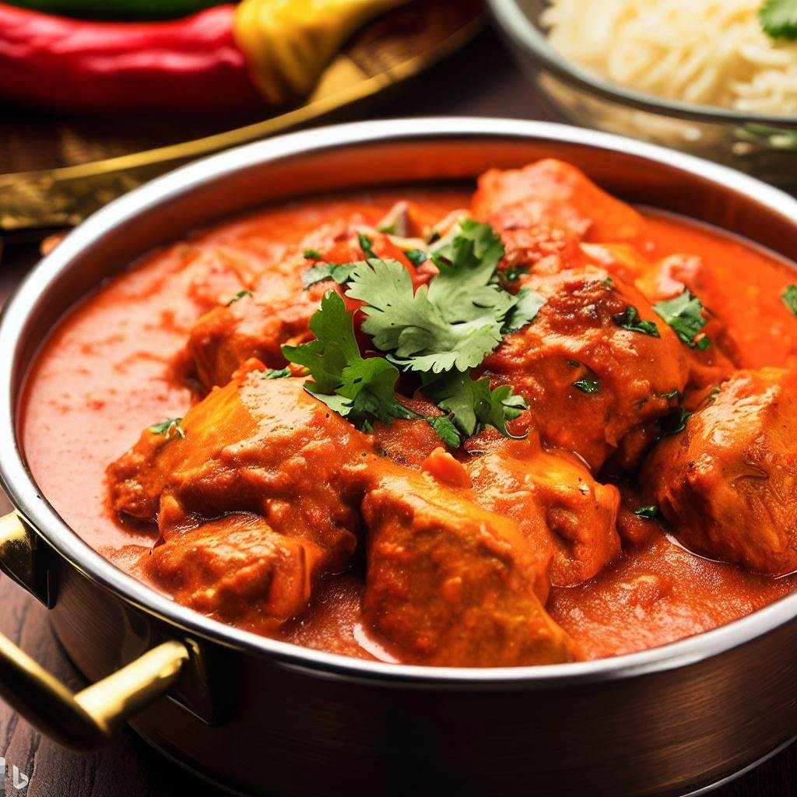

Butter Chicken

Description
Butter Chicken is a classic Indian dish that is sure to delight your taste buds with its rich and creamy tomato-based sauce,
tender chicken pieces, and aromatic spices. This mouth-watering recipe is a must-try for anyone who loves Indian cuisine.
Ingredients
- 500g boneless chicken thighs, cut into bite-sized pieces
- 1 cup plain yogurt
- 2 tbsp lemon juice
- 2 tbsp ginger and garlic paste
- 1 tsp cumin powder
- 1 tsp coriander powder
- 1/2 tsp turmeric powder
- 1/2 tsp chili powder
- Salt to taste
- 4 tbsp unsalted butter
- 1 large onion, finely chopped
- 2 large tomatoes, pureed
- 1/2 cup heavy cream
- 1 tsp garam masala
- Fresh cilantro, chopped for garnish
Steps
- Marinate the chicken in a mixture of yogurt, lemon juice, ginger paste, garlic paste, cumin powder, coriander powder, turmeric powder, chili powder, and salt. Allow it to marinate for at least 30 minutes or up to overnight.
- Melt the butter in a large pan and sauté the onion until it is soft and translucent.
- Add the pureed tomatoes and cook for a few minutes until the mixture has thickened slightly.
- Add the marinated chicken and cook until it is cooked through and tender.
- Add the heavy cream and garam masala and simmer for a few more minutes until the sauce has thickened and the flavors have melded together.
- Serve hot with naan bread or steamed rice, and garnish with fresh cilantro for an extra pop of flavor.